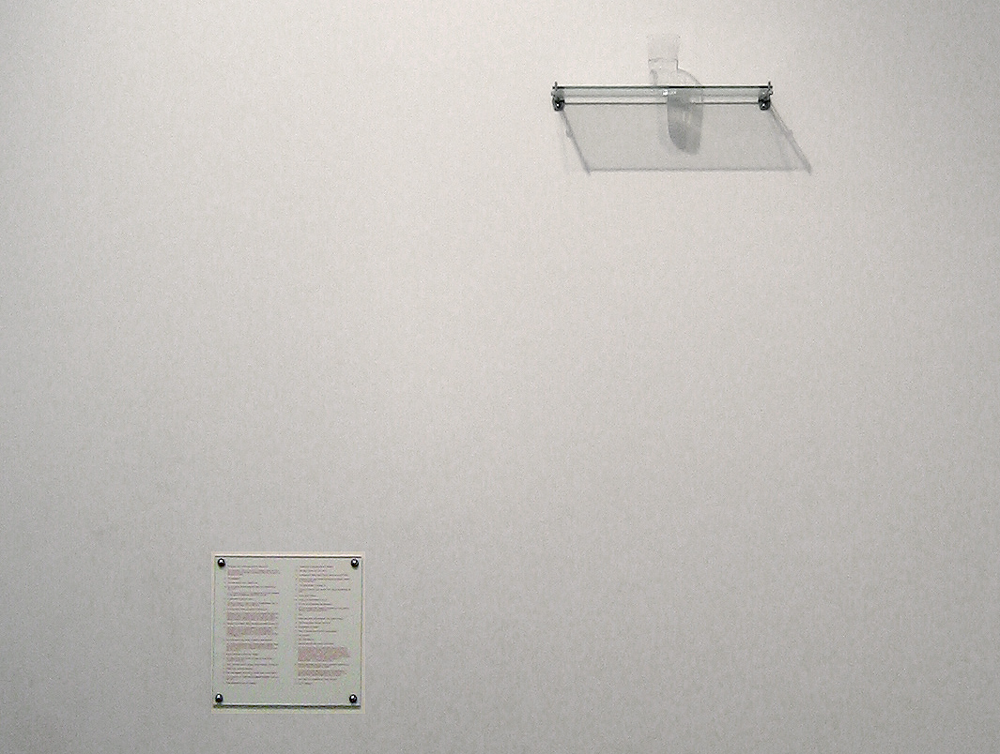
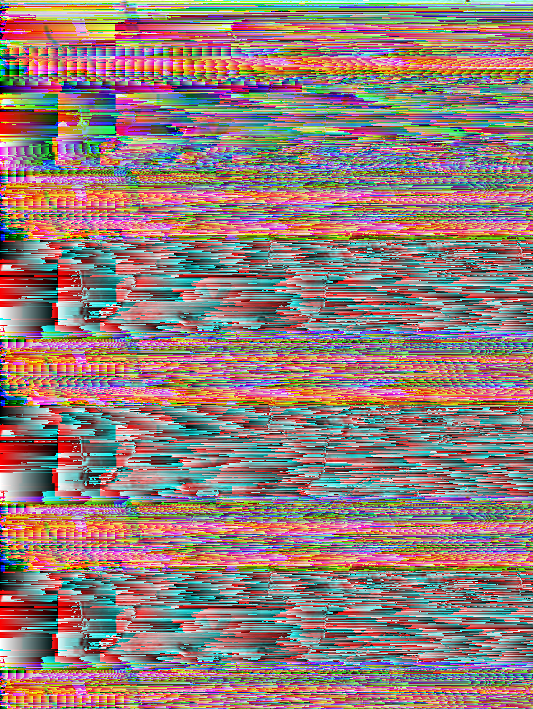

h e n r y r a g a n
you sell what you need, i buy what i own
artsyfilmy
An Oak Tree
Can Digital Art Act As Institutional Critique?
In his 1996 essay, “Content is King,” Bill Gates predicted that companies looking to earn money on the internet will look to provide information and entertainment and demonstrated that ideas of interactivity and involvement were integral to early thinking about the internet’s profitability. Of course, these terms– interactivity and involvement– are crucial to almost any aspect of human relations. Successful activism requires interactivity and involvement, as does community-building and meaningful mutual collaboration, as does brand loyalty and, I suppose, fascism. Contrary to the internet, though, public spaces allow for greater depth of perception: I may walk by a billboard with my friend inviting us to buy the latest iPhone, but the billboard is removed by a certain distance; we need not notice it, and if we do, the immediacy of my friend’s comment, “I love iPhones! / iPhones are the worst” will in a sense mediate my reception of the billboard advertisement. This is not the case on, for example, Reddit, where an advertisement for a new iPhone takes up equal space and therefore equal proximal emphasis as the latest post on r/digitaldetox.
a reddit ad
source:google
The digital space, therefore, mediating community-building efforts through the websites or forums on which we might think to organize them, is thus interlinked with the commodification of our attention and time so perfected by the platforms (Reddit, TikTok, Facebook, etc.) on which we might choose to organize. What’s more, anti-capitalist entertainment or anti-internet posts on Reddit or Quora suit the content machine just as well as anything: In Enjoying It, Alfie Brown shows how “a great deal of enjoyment which appears to be radical and questioning of normative or dominant ideology can in fact serve those ideologies it aims to oppose.” In the book, Brown uses the enjoyment and consumption of critical theory as an example of this paradoxical and problematic relationship.
Rosa Menkmen, untitled glitch art
source:wikipedia
In the realm of digital art that attempts a critique of digital spaces, such a revelation should give us pause. As Carolyn L. Kane noted in “Compression Aesthetics: Glitch From the Avant-Garde to Kanye West,” glitch art, which with its ‘unaesthetic,’ ‘dirty’ aesthetic began as a way to essentially put speedbumps, as it were, on our “Communication Superhighways” is all too easily appropriated by and subsumed into the content machine it criticizes. It should probably be mentioned here that the hollowing out of avant-garde, anti-establishment gestures into mainstream “style” is about as old as the avant-garde itself, the process having been detailed quite convincingly by Umberto Eco in his essay “On the Structure of Bad Taste.” Mikkel Bolt Rasmussen also points out in “A Note on Socially Engaged Art Criticism” that the community and collaboration-orientation of relational aesthetics became by the early 2000s “Increasingly difficult to distinguish … from the artist-as-entrepreneur discourse of neoliberalism.” Thus, artistic ideas have always had to contend in some way with currents of thought and social structures that surround them and threaten to subsume them. What is different, though, about the digital artistic practices as mediated through the internet is that the social orientation becomes increasingly ambiguous. Here, the notion of community-as-corrective to the highly individualizing experience of capitalism is tied up with the individualizing mediation of the internet, and an anti-individualist notion can become inextricably intertwined with an intense individualism.
How do digital artists attempt to deal, then, with the problems and paradoxes of creating art that criticizes social organization and relation in the context of the internet? The questions worth answering: does a commercially successful work of digital art that criticizes the art market not just represent something maddeningly Sisyphean, trying to dismantle a structure by contributing to the firmness of its foundation? Can digital art critical of the ever-more rigid hierarchical structure of the internet and social media ever be other than the “information” and “entertainment” that keep it humming?
“Bitchcoin”
Sarah Meyohas’ 2015 “Bitchcoin” represents one of the earliest tokenizations of art on the blockchain, two years before the term ‘NFT’ entered the popular vernacular and five months before the release of Etherium. In the original conception of “Bitchcoin”, viewer-collectors could purchase a digital token that was backed by a fraction of a ‘real life’ photograph from Meyohas’ Speculations series. Purchasers who had gathered 25 Bitchcoins could exchange them for a physical print of their choice (and exchange prints at any time in the future) or they could treat Bitchcoins like any other form of digital currency, trading or speculating on them as they saw fit.
At one point, Meyohas described the abstraction of value from the site of the physical work to the blockchain as a shift of emphasis onto its creator: “At its worst,” Meyohas said, “artists are just stuff producers. This is kind of about artists reclaiming agency.” The Bitchcoin website takes up this thread: “’Bitchcoin’ allows art collectors to invest directly in Sarah Meyohas as a value producer rather than investing in the artwork itself.” If for Meyohas the artist is not a producer of stuff but a producer of value, “Bitchcoin” makes it literal, with Meyohas literally minting money, backed by the artist’s continued ability to manufacture value.
And yet, it is when the artist refer to “community” that her intentions with the piece get a bit muddy. In a 2021 piece for ArtNet, Meyohas differentiated “Bitchcoin” from Damian Hirst’s similar NFT project “The Currency” by describing her intent with the piece as one of opening a discourse about the financialization of art and the growth of the personal brand. She sought to do this by amplifying these themes and “present[ing them] back as an artwork.” She continues, “For better or for worse, it came out of relational aesthetics rather than chasing wealth.” To recall, Nicolas Bourriad first defined relational art as “an art taking as its theoretical horizon the realm of human interactions and its social context, rather than the assertion of an independent and private symbolic space.” Taking this definition for context, then, we see that the artist intends this project as something that would raise a critical discourse by showing us something about how we organize ourselves (around money) and pushing us to reflect on our own place as consumers in the capitalist schema. However, by opening this critical discourse through the very medium that keeps all us capitalist ducks in a row– money–, the work has a high risk of losing its social program and being subsumed into the robust “financialization of art” it sought to expose. If “Bitchcoin” seeks to show us the financial gears at work behind our motivations, it does so by appealing to those very interests. The independence of the artist is emphasized as a unique producer of value, while the accessibility and availability of the artwork for individual ownership seems to appeal to the alienating keeping-up-with-the-Joneses of competitive consumerism. Meyohas’ 2021 “Bitchcoin Manifesto” states, “Today, Bitchcoin’s power as a tokenized meme continues to grow as it engenders a community of believers and investors.” It is doubtless true that Bitchcoin believer-investors constitute a niche online community, but perhaps the community created by Bitchcoin is at best a more equitable version of a country club. Like the country club, the primary appeal of Bitchcoin– like many NFTs– seems to be the ability to gain access to a special group of owners, defining some aspect of one’s identity through identity with a group. This is in direct opposition to much relational art that actually works to disrupt homogenous group identities by introducing incongruous social/cultural elements into shared spaces. A large catalog of these kinds of projects are cited by Claire Bishop in her excellent essay, “The Social Turn: Collaboration and its Discontents” and elsewhere.
“Cloud of Petals”
If we might be skeptical about “Bitchcoin’s” ability to successfully differentiate itself from more explicitly capitalist NFT projects like CryptoPunks or Damian Hirst’s “The Currency,” Meyohas’ elaboration on “Bitchcoin”, “Cloud of Petals”, is a clear-headed revelation on the artwork that contextualizes it and complicates the profit/elite group-oriented individualism apparently advocated for by the original project. “Cloud of Petals”, filmed in 2017, stands alone as an artistic object but also depicts, as we will see, Meyohas’ real-time reworking of her “Bitchcoin” project. In the film, a group of 16 men– workers from a temp agency Meyohas hired to complete the project – sit at work in a massive, deteriorating office space (the real-world site of the former Bell Labs, remembered best as the place where binary was invented). The men are at work photographing rose petals: they tear the petals off and photograph each individual petal at their workstation before discarding the petals. Through the course of the film, we see that these men are working to digitize images of rose petals for an AI algorithm that, once it has enough photographic data, is able to generate unique digital rose petals ad infinitum.
In “Cloud of Petals”, where dead insects litter the floor of the once fancy-shmancy office building and vultures fly overhead, 16 nameless, similarly-dressed human subjects and the symbolically rich rose seem almost degraded in service of the clean digital world and efficient algorithm that will propagate the work and the organic matter indefinitely and without decay. Better still, Meyohas places herself in the film, a young woman who seems to wander around the Bell Labs site detached from the project, laying in the piles of already-photographed rose petals, playing with a large yellow boa constrictor, sunbathing in the satellite panels on the roof, and setting up the dead insects scattered throughout the office spaces right side up such that they would appear– at first glance– to be alive. The soundtrack, an ominous electronic hum with repetitive synth riffs, accented by the sound of insects buzzing, gives the whole atmosphere of the film a dystopian feel, similar to Godfrey Reggio’s Koyaanisqatsi. This dystopia is complicated, however, by the lushness of the visual world and what the artist notes as the Garden of Eden symbolism of the young woman, the snake, and the rose petals. It seems in some way like a fantastic new world, but if the snake and Eve are relishing this new world, Adam is too busy at work; in any case, it seems he will be left behind: he, the abstracted human worker, the 16 different somebodies, an ambivalent and sexless task-performer who literally flattens the symbolism of the rose into two dimensions to enable the project of beauty to grow and flourish indefinitely, is, in his very operation, working to make himself obsolete.
The artist, in “Cloud of Petals”, is no longer merely a frictionless value-producer: she becomes complicit in a system that is simultaneously disturbing and fascinating, alienating and empowering; she stands artistically aloof, reveling in beauty, but that beauty– the insects and the rose petals– is already dead, and she helped to kill it. “Bitchcoin”, no longer backed by a fraction of a photographic print of the artist, is now backed by one of the 3,291 rose petals selected by each of the 16 workers as “most beautiful” during the course of the shoot. The owner of Bitchcoin can still keep their Bitchcoin and trade it as they see fit, or they can burn their Bitchcoin in exchange for one of these pressed rose petals. Now Meyohas articulates herself incredibly well and doesn’t need words to do so. Here, the idea of relational aesthetics emerges in exposing both the Scylla and Caribdis of individual- and community-orientation in our intricate digital environment. The problem of “value” is also expressed more elegantly: as curators Macella Lista and Philippe Bettinelli, who oversaw the 2023 acquisition of two Bitchcoins by The Centre Pompidou in France stated, “[Bitchcoin] touches on the core of what is at stake, which is the complete interlocking of symbolic, cultural, and financial values.” “Cloud of Petals”, with its ambivalent imagery, makes us reckon with this interlocking of value or begin the herculean (and probably impossible) task of attempting to unentangle one form of value from another.
“Cover of Art Forum”
Another conceptual artist reckoning with systemic critique via digital media is Gretchen Andrew. The London-based American artist defines her practice as “Internet Imperialism”: according to her website, “Gretchen Andrew hacks systems of power with art, code, and glitter.” “Cover of Art Forum” is the name of one of her vision boards, which she described at Design Miami/: “I close my eyes and I think about something that I want . . . and then I make vision boards which are on canvas-works . . . that visualize this having happened in my life, but then what I do is I take these vision boards and I program them online to manipulate Google and Facebook algorithms, so, such that . . . if you Google ‘Cover of Art Forum’ . . ., what comes up are not real covers of Art Forum: they’re drawings that are both of and about me wanting to achieve this goal.” Gretchen Andrew positions this disruption of search engine functionality as a kind of anarchic disruption of the hierarchy of values, coding “The feminine and trivialized materials of her vision boards” into top search engine results as a way of scrambling the bias-backed beauty and power hierarchies of algorithmic recommendation systems.
And yet, much as with my above concerns with the early manifestation of “Bitchcoin”, the theoretically commendable interrogation into hierarchies of value becomes all too easily subsumed– in the artwork and in the artist’s comments themselves– into a kind of goal-oriented manifestation exercise epistemologically chained to a Silicon Valley profit-is-profit mentality. As Gretchen Andrew said in the same Design Miami/ conference quoted above, “Traditionally you had to buy one of my pieces . . . [and] love how it looks . . . [but what] I’ve been so excited about, is making digitally native work to some extent, but then also finding the ways to involve more people and have more people literally profit from my success.” One general criticism levelled against Google and other search engines is that, though designed to provide the most useful and helpful suggestions based on a search query, they can be gamed by affiliate advertisers who provide anodyne “content marketing” language aimed less at informing than at funneling clicks and clickers to multinational corporations like Amazon. Obviously Andrew is no Amazon, but the performance appears less about disrupting hierarchies than about placing oneself at the top of them. If you’re playing by the rules to beat the game, is the game being disrupted at all, or is the game working exactly as it’s meant to?
“Blackness For Sale”
Our final foray into digitally native concept art is the work of Keith and Mendi Obadike, “Blackness for Sale” (2001). In this admittedly early work of internet art, the artist couple put an ad on eBay selling the Keith Obadike’s “blackness”. The concept of the work is self-evident but is elaborated in the listing, where a description at times tongue-in-cheek and at times disturbing lists out “Benefits and Warnings” of purchasing “Keith Obadike’s Blackness”: “1. This Blackness may be used for creating black art” begins the description light-heartedly, but the warnings are more sober: “1. The Seller does not recommend this Blackness be used during legal proceedings of any sort … 5. The Seller does not recommend that this Blackness be used while making intellectual claims,” etc. As Simone Browne wrote, “’Blackness for Sale’ can be read as a critique of colonial encounters and the commodification of blackness.” Here, unlike with the original “Bitchcoin” or “Cover of Art Forum”, the idea of what is for sale, blackness as commodity, is immediately troubling. The confrontation is too direct, the blackness as a commodifiable good, its benefits and limitations enumerated, feels all too real and harrowing to facilitate the smooth and comfortable market exchange enabled by “Bitchcoin” and “Cover of Art Forum.” On the contrary, indeed, “Blackness for Sale” disrupted the smoothness and ostensible naivety of the website’s auction mechanics, with eBay taking down the listing four days after its being posted, citing the item as “inappropriate for listing on its site.” In Blackness for Sale, the direct and confrontational idea of blackness as commodity is made manifest in a way that not only elegantly elucidates the problem the artists wanted to confront, but as manifestation brings the viewer in as a complicit party, forcing us to reckon with the way we might be commodified or the way we might commodify others, problematizing profit itself as potentially directly harmful to another’s sense of independence and self.
Conclusion
Many other projects could be mentioned or elaborated here: Rafia Santana’s “#PAYBLACKTIME”, DIS’ “DIS Images,” Elliot Arkin and Marc Lafia’s “MundiCoin,” and many others. As we see in the examples above, the task of system-critical conceptual digital art is directly intervening in our habits and biases while remaining aloof to easy naturalization and appropriation. In the now highly competitive and corporatized digital space, conceptual art and artists have the opportunity to pull our attention away from speed and productivity, forcing our attention back on ourselves to– even for a moment– reckon with what we’ve made and what continues to make us.
The Critic's Role
What is the critic’s job in writing a review of a film? Perhaps, as some have suggested, the best critic functions as a kind of belated dramaturg. This dramaturg, arriving late to the production, and with no time to even discuss the production with the creatives, must in any case look at the production not as a unified whole but as a synthesis of concrete elements– choices– through which an aesthetic message, amongst other possible messages, is coded. Explaining what we at first perceive as the unified final product in terms of its constituent choices, the dramaturg provides the audience with a framework to help them better appreciate the production. This function– when it comes to the theater– is fundamentally pragmatic, providing as it does an additional framework or frameworks beyond a simple spectrum of subjective values with which to view and therefore appreciate the play, thereby increasing the bang per buck. Additional frameworks include historical (providing, for example, a historical background on Shakespeare’s London or documenting the complexities of Victorian fashion), interpretive (e.g. ‘5 ways to think about the ending’), or critical (e.g. structural, deconstructionist, post-colonialist, etc.). In film, a good critic should help us see how better to appreciate a film.
music / sounds
days of the week
inspiration
Eco_Umberto_The_Role_of_the_Reader_1979.pdf [Umberto-Eco]-A-Theory-of-Semiotics(z-lib.org).pdf Robert O. Paxton-The Anatomy of Fascism -Knopf (2004).pdfcontact
Email: henrylragan@gmail.com